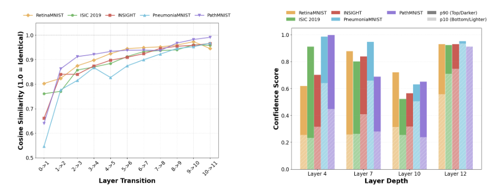
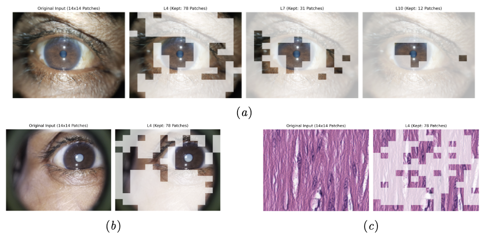
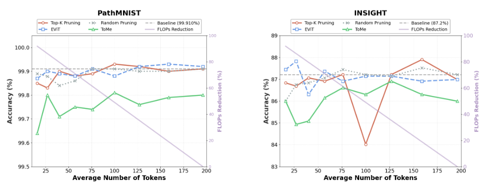

* Equal contribution · † Corresponding authors
Vision Transformers are powerful but computationally expensive for clinical deployment. We propose a unified adaptive inference framework that combines Token Reduction (TR) and Early Exiting (EE) through dataset-specific profiling, using Jensen-Shannon Divergence to quantify spatial redundancy and a lightweight CNN predictor to select inference strategy per sample. Across five diverse medical imaging datasets, our method achieves 71.4% average FLOPs reduction with only 0.1pp accuracy loss, substantially outperforming individual strategies (EE-only: 55.9%, TR-only: 57.7%) and yielding a 2.07× speedup with 54.3% energy reduction.
Vision Transformers (ViTs) have achieved state-of-the-art results across medical imaging tasks such as dermatological lesion classification, chest X-ray diagnosis, histopathological analysis, and ophthalmic imaging. Yet their high computational cost creates critical barriers for clinical deployment:
Diabetic retinopathy and cataract screening programs process thousands of images daily. Even modest per-image latency becomes a serious cumulative burden.
Mobile imaging for underserved communities (e.g., Aravind Eye Hospital) operates under severe hardware constraints, making standard ViTs impractical.
Medical images vary widely in complexity. A straightforward case shouldn't use the same compute as an ambiguous one — but uniform strategies don't adapt.
Two prominent efficiency strategies exist: Token Reduction (TR) prunes spatially redundant patches, and Early Exiting (EE) terminates inference when prediction confidence is sufficient. Prior work treats these in isolation. We ask: which strategy is right for which dataset and for which sample?
Through comprehensive dataset profiling, we show that optimal strategies vary dramatically across modalities, and that adaptively combining TR and EE yields gains neither can achieve alone.
Our framework fine-tunes DeiT-S with early exit heads, profiles each dataset's redundancy and complexity characteristics, then deploys a unified inference pipeline that dynamically selects the optimal path per sample at test time.
Fine-tune DeiT-S with lightweight MLP classifiers at layers 4, 7, and 10. All heads are trained simultaneously using a weighted multi-exit loss.
Profile each dataset's spatial redundancy via Jensen-Shannon Divergence and sample complexity via confidence sweep. Calibrate per-dataset thresholds θ_EE and θ_R.
A lightweight CNN predictor estimates redundancy in one pass. Redundant samples use TR; high-confidence samples exit early; complex ones go full depth.
We attach lightweight two-layer MLP classifiers (with layer normalization) to the CLS token at layers 4, 7, and 10 of DeiT-S. All heads are trained jointly:
where $w_4 = w_7 = w_{10} = 0.3$ and $w_\text{final} = 1.0$.
For each validation sample, we compute a ground-truth redundancy score from attention distributions:
High $y_\text{red}$ (close to 1) indicates low divergence between attention patterns — i.e., the image is spatially redundant and tokens can be safely pruned. A lightweight CNN is then trained to predict $\hat{y}_\text{red}$ directly from input pixels, avoiding full forward passes at test time.

Figure 1. Dataset redundancy and complexity analysis across DeiT-S layers. (a) Token-level cosine similarity across layer transitions — RetinaMNIST and ISIC2019 exhibit high initial similarity (~0.8), while INSIGHT, PathMNIST, and PneumoniaMNIST start lower (~0.6). All datasets show monotonically increasing similarity. (b) Sample-wise confidence at EE checkpoints (layers 4, 7, 10, 12) for easy samples (90th pct, lighter) and hard samples (10th pct, darker). PathMNIST and PneumoniaMNIST achieve high early confidence; RetinaMNIST and INSIGHT maintain persistent easy-hard gaps, requiring deeper inference.
At test time, for each input image $\mathbf{x}$:
use_tr = (ŷ_red > θ_R)This pipeline ensures: spatially redundant samples use TR → high-confidence samples exit early → complex samples receive full computation.
We evaluate on five medical imaging datasets: ISIC2019 (skin lesions, 9-class), PathMNIST (colon tissue, 9-class), PneumoniaMNIST (pneumonia, binary), RetinaMNIST (diabetic retinopathy, 5-class), and INSIGHT (cataract, real-world clinical data, 4-class).
Our TR+EE framework outperforms all baselines: EE-only achieves 55.9% FLOPs reduction, TR-only achieves 57.7%, and the state-of-the-art A-ViT achieves only 28.9%. By combining both strategies with dataset-specific thresholds, we exceed these bounds while maintaining diagnostic accuracy within 0.1pp on average.
| Dataset | Strategy | Accuracy (%) | Avg Tokens | Avg Exit Layer |
|---|---|---|---|---|
| ISIC2019 | Baseline | 54.2 | 196 | 12.0 |
| EE-only | 56.8 (↑2.6pp) | 196 | 9.26 | |
| TR-only | 56.8 (↑2.6pp) | 40 | 12.0 | |
| A-ViT | 56.8 (↑2.6pp) | 196 | 12.0 | |
| TR+EE (Ours) | 51.7 | 20.8 | 10.3 | |
| PneumoniaMNIST | Baseline | 90.1 | 196 | 12.0 |
| EE-only | 87.8 | 196 | 1.86 | |
| TR-only | 92.1 (↑2.0pp) | 40 | 12.0 | |
| A-ViT | 92.0 (↑1.9pp) | 196 | 12.0 | |
| TR+EE (Ours) | 88.8 | 56.3 | 4.65 | |
| RetinaMNIST | Baseline | 59.0 | 196 | 12.0 |
| EE-only | 61.0 (↑2.0pp) | 196 | 5.45 | |
| TR-only | 54.5 | 40 | 12.0 | |
| A-ViT | 57.0 | 196 | 12.0 | |
| TR+EE (Ours) | 60.8 (↑1.8pp) | 44.8 | 7.7 | |
| PathMNIST | Baseline | 94.7 | 196 | 12.0 |
| EE-only | 94.4 | 196 | 11.0 | |
| TR-only | 93.5 | 40 | 12.0 | |
| A-ViT | 92.0 | 196 | 12.0 | |
| TR+EE (Ours) | 96.0 (↑1.3pp) | 79 | 3.0 | |
| INSIGHT (real-world cataract) | Baseline | 86.1 | 196 | 12.0 |
| EE-only | 87.4 (↑1.3pp) | 196 | 7.04 | |
| TR-only | 85.5 | 40 | 12.0 | |
| A-ViT | 84.9 | 196 | 12.0 | |
| TR+EE (Ours) | 86.2 (↑0.1pp) | 29.2 | 6.9 | |
| Average (All Datasets) | −0.1pp | 46.0 | 6.5 | |
| Dataset | Strategy | FLOPs (G) | Latency (ms) | Energy (mJ) | Speedup |
|---|---|---|---|---|---|
| ISIC2019 | Baseline | 4.61 | 1.201 | 9.776 | 1.00× |
| A-ViT | 3.742 (↓18.8%) | 1.431 | 11.724 | 0.84× | |
| TR+EE (Ours) | 1.569 (↓66.0%) | 0.629 | 4.886 | 1.91× | |
| PneumoniaMNIST | Baseline | 4.61 | 1.188 | 9.404 | 1.00× |
| A-ViT | 3.032 (↓34.2%) | 1.414 | 11.250 | 0.84× | |
| TR+EE (Ours) | 1.204 (↓73.9%) | 0.575 | 4.503 | 2.07× | |
| RetinaMNIST | Baseline | 4.61 | 1.189 | 9.116 | 1.00× |
| A-ViT | 4.320 (↓6.3%) | 1.420 | 353.233 | 0.84× | |
| TR+EE (Ours) | 1.398 (↓70.0%) | 0.620 | 4.853 | 1.92× | |
| PathMNIST | Baseline | 4.61 | 1.225 | 12.401 | 1.00× |
| A-ViT | 2.386 (↓48.2%) | 1.468 | 12.611 | 0.83× | |
| TR+EE (Ours) | 1.050 (↓77.2%) | 0.475 | 4.243 | 2.58× | |
| INSIGHT | Baseline | 4.61 | 1.196 | 9.776 | 1.00× |
| A-ViT | 2.902 (↓37.0%) | 1.421 | 12.561 | 0.84× | |
| TR+EE (Ours) | 1.394 (↓69.8%) | 0.631 | 4.568 | 1.90× |

Figure 4. Visualization of adaptive framework behavior on INSIGHT and PathMNIST samples. (a) TR-only path: sequential token reduction at 40% keep rate across all checkpoints, preserving informative pupil regions through layer 12. (b)–(c) Combined TR+EE examples: TR activates at the first checkpoint, followed by early exit — clear cataract evidence or salient tissue structure enables confident prediction without deeper layers.

Figure 3. Token reduction strategy comparison across medical imaging datasets. PathMNIST (left) tolerates aggressive reduction — all strategies maintain >99.7% accuracy at 40 tokens. INSIGHT (right) shows greater sensitivity; EViT proves most stable, maintaining 86.3% at 40 tokens (−0.9pp). ToMe collapses below 76 tokens on INSIGHT.
If this work is useful in your research, please cite:
@inproceedings{byun2026adaptive,
title = {Adaptive Inference for Medical Vision Transformers:
Token Reduction or Early Exit?},
author = {Byun, Ji Young and Lee, HyunSeo and Shuff, Jordan and
Venkatesh, Rengaraj and Shekhawat, Nakul S. and
Parikh, Kunal S. and Chellappa, Rama},
booktitle = {Medical Imaging with Deep Learning (MIDL)},
year = {2026}
}